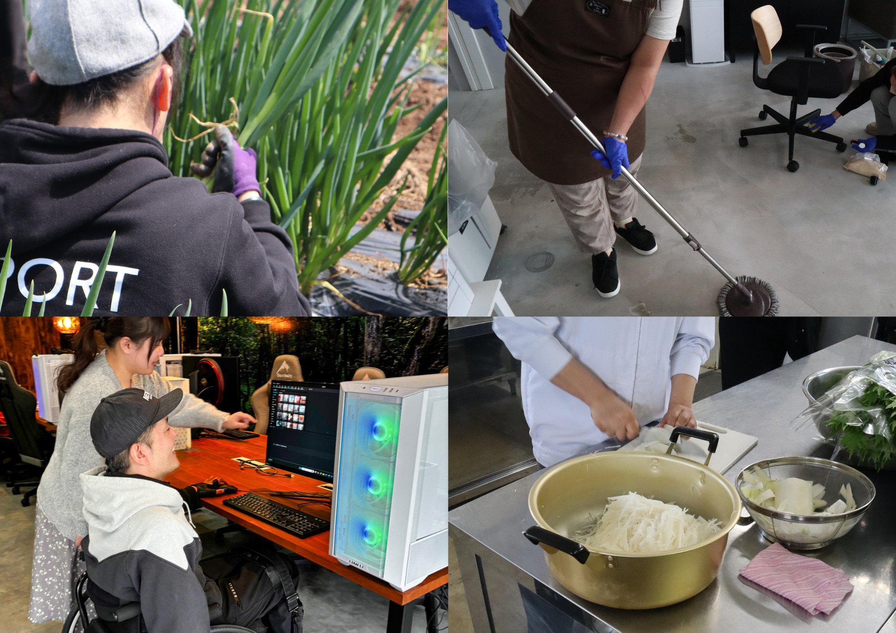
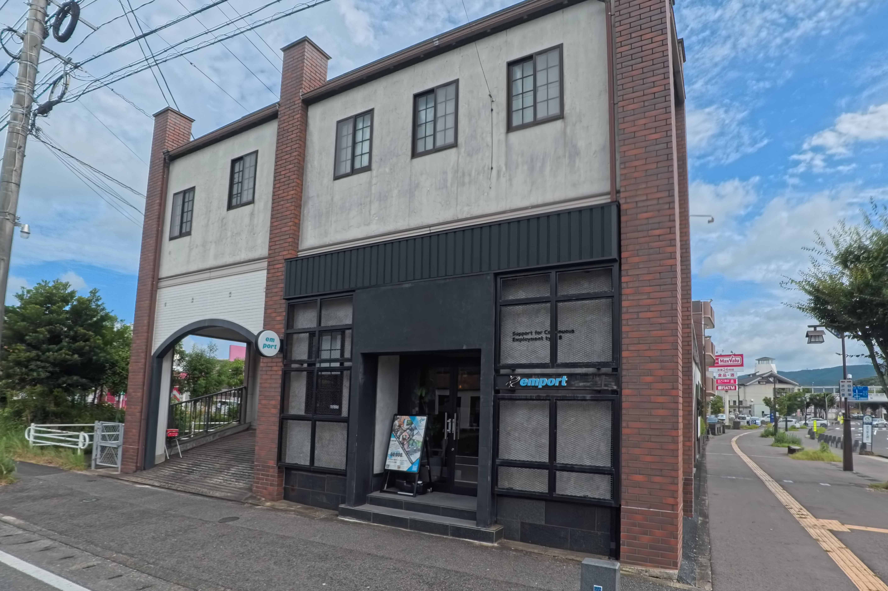

EMPORT CONCEPT
安心して、
新しい自分に出会える場所。
エンポートは、障害福祉サービス事業所です。クリエイティブ・農業・キッチン・清掃という4つの仕事の場を通じて、一人ひとりが自分のペースで得意を見つけ、社会とのつながりを育てていく場所を目指しています。
OUR IDEA
「挑戦」は、特別な人だけのものじゃない。
新しいスキルを身につけること。自分の得意に気づくこと。仕事として、誰かの役に立つこと。エンポートは、そうした小さな一歩の積み重ねを、無理のないペースで支える場所です。焦らせず、比べず、その人自身のペースを大切にします。
４つの仕事から
仕事の選択肢
クリエイティブ・農業・キッチン・清掃。得意や興味に合わせて、働き方を選べます。
制度
頑張りが形になる仕組み
資格取得支援制度やフレックス制度など、挑戦と生活の両立を後押しする制度があります。
相談
急かさない見学・体験
見学したその日に決める必要はありません。持ち帰って、ご家族やご本人のペースで考えられます。
DEPARTMENTS
4つの部門、4つの働き方。
それぞれの部門に、それぞれの色があります。自分に合う仕事のかたちを、じっくり選んでください。

写真：4部門の作業風景（コラージュ）
写真：施設外観 または 相談風景ABOUT EMPORT
大切にしているのは、
「その人らしさ」から始めること。
エンポートが目指すのは、支援する側・される側という関係ではなく、一緒に考え、一緒に歩む関係です。理念や支援方針、施設の様子は「エンポートについて」のページでご紹介しています。
エンポートについて詳しくHOW TO START
利用開始までは、5つのステップ。
まずは見学から。契約を急かすことはありません。ご本人のペースで、ゆっくり検討してください。
問い合わせ → 見学 → 体験利用 → 面談 → 利用開始
詳しい流れや、よくいただくご質問は「利用開始までの流れ」「よくある質問」のページでご紹介しています。